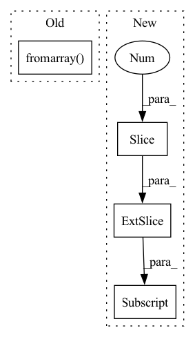

Pattern ID :20998

Before Change
// plt.show()
np.save(os.path.join(dump_path, "out.npy"), out_img)
out_img = Image.fromarray(np.uint8(get_uint8_range(out_img)))
out_img.save(os.path.join(dump_path, str(img_id).zfill(img_format[0]) + img_format[1]))
if should_display:
plt.imshow(np.uint8(get_uint8_range(out_img)))
plt.show()
After Change
dump_img = np.copy(out_img)
dump_img += np.array(IMAGENET_MEAN_255).reshape((1, 1, 3))
dump_img = np.clip(dump_img, 0, 255).astype("uint8")
cv.imwrite(os.path.join(dump_path, out_img_name), dump_img[:, :, ::-1])
if should_display:
plt.imshow(np.uint8(get_uint8_range(out_img)))
plt.show()
In pattern: SUPERPATTERN
Frequency: 3
Non-data size: 4
Instances
Fragment ID: 67576705
Project Name: gordicaleksa/pytorch-neural-style-transfer
Commit Name: 6856e5796971c3fb5e77c0a798b35e6e106b5bcb
Time: 2020-03-30
Author: gordicaleksa@gmail.com
File Name: utils/utils.py
M Class Name: AnonimousClass
N Class Name: AnonimousClass
M Method Name: save_and_maybe_display(6)
N Method Name: save_and_maybe_display(7)
M Parent Class:
N Parent Class:
M File Name: utils/utils.py
N File Name: utils/utils.py
M Start Line: 61
M End Line: 75
N Start Line: 74
N End Line: 86
'>
Before Change
if labels:
img_ = cv2.putText(img_, labels[i], (bbox[0], bbox[3]), cv2.FONT_HERSHEY_SIMPLEX, 1, (255, 255, 255))
return Image.fromarray(img_)
def bbox_wh_iou(wh1, wh2):
wh2 = wh2.t()
After Change
bboxes_xyxy[:,2] *= w
bboxes_xyxy[:,3] *= h
bboxes_xyxy[:, 0:4] = bboxes_xyxy[:,0:4].round()
arr = bboxes_xyxy.numpy()
'>
Fragment ID: 67576704
Project Name: vcasecnikovs/yet-another-yolov4-pytorch
Commit Name: 8a7cd85191f98ca0ec4ed7bf130203a240834e91
Time: 2020-05-30
Author: casecnikov@gmail.com
File Name: utils.py
M Class Name: AnonimousClass
N Class Name: AnonimousClass
M Method Name: get_img_with_bboxes(5)
N Method Name: get_img_with_bboxes(4)
M Parent Class:
N Parent Class:
M File Name: utils.py
N File Name: utils.py
M Start Line: 28
M End Line: 51
N Start Line: 27
N End Line: 56
'>
Before Change
def save_image(img, img_path):
img = Image.fromarray(img)
if img.mode != "RGB":
img = img.convert("RGB")
img.save(img_path)
After Change
def save_image(img, img_path):
if len(img.shape) == 2:
img = np.stack((img,) * 3, axis=-1)
cv.imwrite(img_path, img[:, :, ::-1])
def generate_out_img_name(config):
'>
Fragment ID: 67576702
Project Name: gordicaleksa/pytorch-neural-style-transfer
Commit Name: 6856e5796971c3fb5e77c0a798b35e6e106b5bcb
Time: 2020-03-30
Author: gordicaleksa@gmail.com
File Name: utils/utils.py
M Class Name: AnonimousClass
N Class Name: AnonimousClass
M Method Name: save_image(2)
N Method Name: save_image(2)
M Parent Class:
N Parent Class:
M File Name: utils/utils.py
N File Name: utils/utils.py
M Start Line: 55
M End Line: 58
N Start Line: 62
N End Line: 64